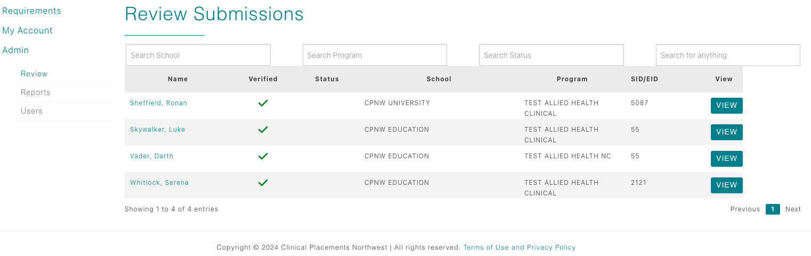

Healthcare Coordinator Guide
Review Student Submissions
Find students once they pass the Clinical Passport review, inspect their documentation, and process your facility’s requirements.

Understand when students appear
- Healthcare coordinators only see students after all CPNW Clinical Passport requirements are approved and the education coordinator or CPNW Document Verification Specialist clicks Verification Complete.
- Until that button is pressed, the student will not display in the healthcare Review table—so you can focus on students who have a verified checkmark.
- Use Dashboard > Review to open the table. The columns represent important information such as Name, Program, Status, Verified, etc. but only list students assigned to your facility.
Inspect Clinical Passport submissions
Clicking a student’s name opens their requirement modal. The first requirements listed will be your site-specific requirements, followed by CPNW Clinical Passport requirements, and Education Requirements.
- For CPNW Clinical Passport requirement entries, you have view-only access. You can read/send comments, open attachments, and confirm what the education team approved, but you cannot change the status.
- Use this visibility to prepare for onboarding conversations or to confirm that immunizations, background checks, and eLearning modules meet your facility standards.
- If anything looks off, leave a note for the education coordinator—they retain ownership of CPNW requirement approvals.
Approve or reject site-specific requirements
- Locate the site-specific Healthcare requirements of the modal (usually below the Clinical Passport list).
- Click a requirement name to open its detail view. You can review student entries, and any uploaded attachments.
- Select Accept or Reject. Rejections require a message so students know how to fix the issue.
- Save your decision. The status updates immediately for education partners and the student.
Important Notes
- The Verified column in the healthcare Review table indicates which students cleared the Clinical Passport and have active site-specific requirements remaining.
- You can also monitor the requirement status of CPNW, Healthcare, and Education requirements from the Reports table. Located on your dashboard under Admin >> Reports.
- Every document uploaded to a students requirement will also be available for downloading from the students Docs folder in your Reports table.
- Once every site-specific requirement is accepted, and you are satisfied with the status of the CPNW requirements, you can approve the students rotation assignment in your Reports table Clinical Roster tab. The student will not be visible in this table until 6 weeks prior to the assignment start date.